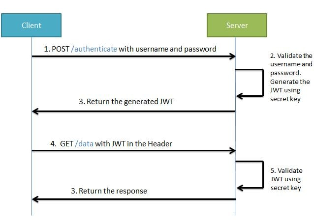
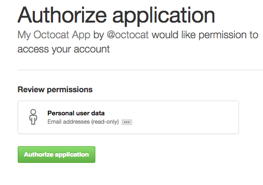

17. Spring Boot Security¶
包含本系统资源安全；
A系统访问B系统，A、B系统资源均被保护
其他系统访问本系统资源
17.1. 概念¶
认证（Authentication）
授权（Authorization）
验证（Verification）
证书（Certification）
通过验证用户的”证”（如：用户名/密码、JSON Web令牌( JWT )或身份提供者的身份令牌）
管理经过身份验证的状态（通过发出令牌，如 JWT，或创建一个会话)
将经过身份验证的用户的信息附加到请求对象，以便在路由处理程序中进一步使用
17.1.1. 启用Security¶
1 2 3 4 | <dependency>
<groupId>org.springframework.boot</groupId>
<artifactId>spring-boot-starter-security</artifactId>
</dependency>
|
17.1.2. 覆盖默认用户和密码¶
By adding some configuration into the application.properties file:
1 2 | spring.security.user.name=user
spring.security.user.password=password
|
17.1.3. 自定义配置¶
configure(WebSecurity web) 定义过滤规则
configure(HttpSecurity http) 定义授权
configure(AuthenticationManagerBuilder auth) 定义用户
1 2 3 4 5 6 7 8 9 10 11 12 13 14 15 16 17 18 19 20 21 22 23 24 25 26 27 28 29 | public class MyWebSecurityConfiguration extends WebSecurityConfigurerAdapter {
@Override
public void configure(WebSecurity web) throws Exception {
web.ignoring()
// Spring Security should completely ignore URLs starting with /resources/
.antMatchers("/resources/**");
}
@Override
protected void configure(HttpSecurity http) throws Exception {
http.authorizeRequests().antMatchers("/public/**").permitAll().anyRequest()
.hasRole("USER").and()
// Possibly more configuration ...
.formLogin() // enable form based log in
// set permitAll for all URLs associated with Form Login
.permitAll();
}
@Override
protected void configure(AuthenticationManagerBuilder auth) throws Exception {
auth
// enable in memory based authentication with a user named "user" and "admin"
.inMemoryAuthentication().withUser("user").password("password").roles("USER")
.and().withUser("admin").password("password").roles("USER", "ADMIN");
}
// Possibly more overridden methods ...
}
|
参考：https://blog.csdn.net/qq_38225558/article/details/101754743
17.2. JWT¶
17.2.1. 术语¶
JSON Web Token (JWT)
JSON Web Signature (JWS)
JSON Web Encryption (JWE)
JSON Web Key (JWK)
17.2.2. JWT¶
{kind=link}
During the first request the client sends a POST request with username and password. Upon successful authentication the server generates the JWT sends this JWT to the client. This JWT can contain a payload of data. On all subsequent requests the client sends this JWT token in the header. Using this token the server authenticates the user. So we don’t need the client to send the user name and password to the server during each request for authentication, but only once after which the server issues a JWT to the client. A JWT payload can contain things like user ID so that when the client again sends the JWT, you can be sure that it is issued by you, and you can see to whom it was issued.
17.3. OAuth2¶
17.3.1. 概念¶
OAuth 2 提供程序让第三方网站可以代表用户访问其受保护的资源(如微信，qq，github等平台上的用户的资源)。
17.3.1.1. 快递员问题¶
我住在一个大型的居民小区。
小区有门禁系统。
进入的时候需要输入密码。
我经常网购和外卖，每天都有快递员来送货。我必须找到一个办法，让快递员通过门禁系统，进入小区。
如果我把自己的密码，告诉快递员，他就拥有了与我同样的权限，这样好像不太合适。万一我想取消他进入小区的权力，也很麻烦，我自己的密码也得跟着改了，还得通知其他的快递员。
有没有一种办法，让快递员能够自由进入小区，又不必知道小区居民的密码，而且他的唯一权限就是送货，其他需要密码的场合，他都没有权限？
17.3.1.2. 授权机制的设计¶
于是，我设计了一套授权机制。
门禁系统的密码输入器下面，增加一个按钮，叫做”获取授权”。快递员需要首先按这个按钮，去申请授权。
他按下按钮以后，屋主（也就是我）的手机就会跳出对话框：有人正在要求授权。系统还会显示该快递员的姓名、工号和所属的快递公司。
我确认请求属实，就点击按钮，告诉门禁系统，我同意给予他进入小区的授权。
门禁系统得到我的确认以后，向快递员显示一个进入小区的令牌（access token）。令牌就是类似密码的一串数字，只在短期内（比如七天）有效。
快递员向门禁系统输入令牌，进入小区。
有人可能会问，为什么不是远程为快递员开门，而要为他单独生成一个令牌？这是因为快递员可能每天都会来送货，第二天他还可以复用这个令牌。另外，有的小区有多重门禁，快递员可以使用同一个令牌通过它们。
17.3.1.3. 互联网场景¶
我们把上面的例子搬到互联网，就是 OAuth 的设计了。
首先，居民小区就是储存用户数据的网络服务。这里居民小区好比微信，它储存了我的个人信息，好友信息，获取这些信息，就必须经过微信的”门禁系统”。
其次，快递员（或者说快递公司）就是第三方应用，想要穿过门禁系统，进入小区。
最后，我就是用户本人，同意授权第三方应用进入小区，获取我的数据。
简单说，OAuth 就是一种授权机制。数据的所有者告诉系统，同意授权第三方应用进入系统，获取这些数据。系统从而产生一个短期的进入令牌（token），用来代替密码，供第三方应用使用。
17.3.1.4. 令牌与密码¶
令牌（token）与密码（password）的作用是一样的，都可以进入系统，但是有三点差异。
令牌是短期的，到期会自动失效，用户自己无法修改。密码一般长期有效，用户不修改，就不会发生变化。
令牌可以被数据所有者撤销，会立即失效。以上例而言，屋主可以随时取消快递员的令牌。密码一般不允许被他人撤销。
令牌有权限范围（scope），比如只能进小区的二号门。对于网络服务来说，只读令牌就比读写令牌更安全。密码一般是完整权限。
上面这些设计，保证了令牌既可以让第三方应用获得权限，同时又随时可控，不会危及系统安全。这就是 OAuth 2.0 的优点。
注意，只要知道了令牌，就能进入系统。系统一般不会再次确认身份，所以令牌必须保密，泄漏令牌与泄漏密码的后果是一样的。 这也是为什么令牌的有效期，一般都设置得很短的原因。
OAuth 2.0 对于如何颁发令牌的细节，规定得非常详细。具体来说，一共分成5种授权类型（authorization grant），即5种颁发令牌的方式，适用于不同的互联网场景。
授权码（authorization-code）
隐藏式（implicit）
密码式（password）：
客户端凭证（client credentials）
刷新凭证（refresh token）
注意，不管哪一种授权方式，第三方应用申请令牌之前，都必须先到系统备案，说明自己的身份，然后会拿到两个身份识别码：客户端 ID（client ID）和客户端密钥（client secret）。这是为了防止令牌被滥用，没有备案过的第三方应用，是不会拿到令牌的。
17.3.1.5. oauth2-github demo¶
我们开发一个网站A，使用户能用Github账号登录，通过 OAuth 获取 API 数据（含有登录账号的个人信息）。

Authorization Server 授权服务器 –> Github.com
Resource Server –> 受保护的资源（Github.com中的用户信息和其他信息），这里Github承担双重角色，即是授权服务器，又是资源服务器。
Client 客户端 –> 网站A
Resource Owner –> 用户（电脑前的你，也应该是Github.com中的用户）
现在给OAuth 2下定义： OAuth 2提供程序让客户端（网站A）可以代表用户访问其受保护的资源。 授权服务器（Github）通过管理和验证用于访问受保护资源的OAuth 2令牌来做到这一点。 如果通过，授权服务器（Github）还必须为用户提供一个界面，以确认可以授予客户端（网站A）访问受保护资源的权限（即确认页面），如下图所示。
{kind=link}
17.3.2. 最小化授权服务器¶
官方称为：Authorization Server
添加依赖
添加@EnableAuthorizationServer注释
指定client ID 和 secret
17.3.2.1. 添加依赖¶
1 2 3 4 | <dependency>
<groupId>org.springframework.security.oauth.boot</groupId>
<artifactId>spring-security-oauth2-autoconfigure</artifactId>
</dependency>
|
17.3.2.2. 添加@EnableAuthorizationServer注释¶
1 2 3 4 5 6 7 8 9 10 11 12 13 14 15 | package com.docedit.fsd.oauth;
import org.springframework.boot.SpringApplication;
import org.springframework.boot.autoconfigure.SpringBootApplication;
import org.springframework.security.oauth2.config.annotation.web.configuration.EnableAuthorizationServer;
@EnableAuthorizationServer
@SpringBootApplication
public class WebApplication {
public static void main(String[] args) {
SpringApplication.run(WebApplication.class, args);
}
}
|
17.3.2.3. 指定client ID 和 secret¶
security.oauth2.client.client-id = first-client
security.oauth2.client.client-secret = noonewilleverguess
配置成功后，可以通过下面的curl命令获取Token:
curl first-client:noonewilleverguess@localhost:8080/oauth/token -dgrant_type=client_credentials -dscope=any
17.3.3. 自定义授权服务器¶
默认情况下OAuth2 Boot项目会创建一个AuthorizationServerConfigurer实例，并附带一些默认值：
它注册一个NoOpPasswordEncoder（覆盖Spring Security的默认值）
它支持任何授权类型：authorization_code，password，client_credentials，implicit或refresh_token。
如何在项目classpath上有下面这些bean，那么配置将会优先选择用户自定义的：
AuthenticationManager：用于查找最终用户（不是客户端）
TokenStore：用于生成和检索令牌
AccessTokenConverter：用于将访问令牌转换为不同的格式，例如JWT。
如果需要配置多个客户端，更改授予类型或使用加密密码，那么需要通过自定义自己的AuthorizationServerConfigurer示例类来定制化授权服务。
我们完善上面的配置，是其实现下面的功能：
添加用户（上面的配置是客户端，不是用户）
用户登录功能
自定义callback页面
17.3.3.1. 初始化用户¶
初始化用户和用户登录的功能均不是Oauth 2的功能，他们是security中的功能，示例代码如下：
1 2 3 4 5 6 7 8 9 10 11 12 13 14 15 16 17 18 19 20 21 22 23 | @EnableWebSecurity
public class WebSecurityConfig extends WebSecurityConfigurerAdapter {
@Bean
@Override
public UserDetailsService userDetailsService() {
return new InMemoryUserDetailsManager(
User.withDefaultPasswordEncoder()
.username("enduser")
.password("password")
.roles("USER")
.build());
}
@Autowired
private UmsMemberService memberService;
@Bean
public UserDetailsService userDetailsService() {
//获取登录用户信息
return username -> memberService.loadUserByUsername(username);
}
}
|
17.3.3.2. 自定义callback页面¶
授权服务器通过验证后，跳转到客户端提供的callback地址，继续处理客户端上的业务逻辑。
1 2 3 4 5 6 7 8 9 10 11 12 13 14 15 16 17 18 | @Configuration
public class AuthorizationServerConfig extends AuthorizationServerConfigurerAdapter {
@Bean
PasswordEncoder passwordEncoder() {
return PasswordEncoderFactories.createDelegatingPasswordEncoder();
}
protected void configure(ClientDetailsServiceConfigurer clients) {
clients
.inMemory()
.withClient("first-client")
.secret(passwordEncoder().encode("noonewilleverguess"))
.scopes("read") // 注意，官网这里的值是resource:read，我本地跑不起来
.authorizedGrantTypes("authorization_code")
.redirectUris("http://localhost:8081/oauth/login/client-app");
}
}
|
上面配置的授权类型是authorization_code，我看可以通过下面的方法进行测试：
如果用户没有登录，则应用跳转到地址： http://localhost:8080/login
如果用户已经登录了，应用将会生成一个code，附加到callback地址上返回。Once the user logs in, the application generates a code and redirects to the registered redirect URI — in this case, http://localhost:8081/oauth/login/client-app
17.3.4. configure¶
ResourceServerConfigurerAdapter.configure(HttpSecurity httpSecurity) 和 WebSecurityConfigurerAdapter.configure(HttpSecurity httpSecurity) 的区别： 它们执行的顺序不同，The @EnableResourceServer does something similar, but the filter chain it adds is at order=3 by default. WebSecurityConfigurerAdapter has an @Order(100) annotation. So first the ResourceServer will be checked (authentication) and then your checks in your enxtension of WebSecurityConfigureAdapter will be checked.